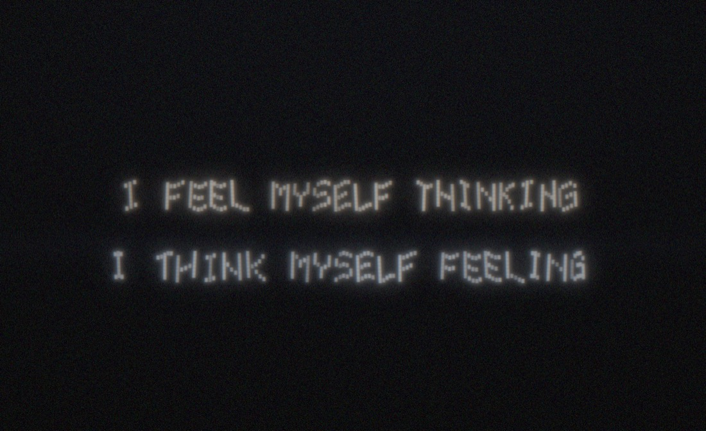
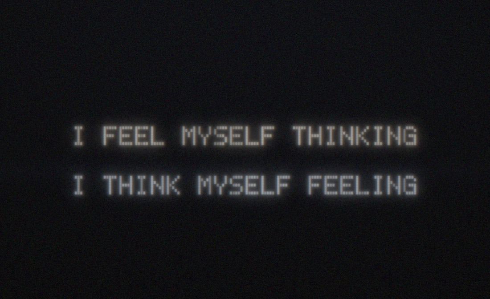
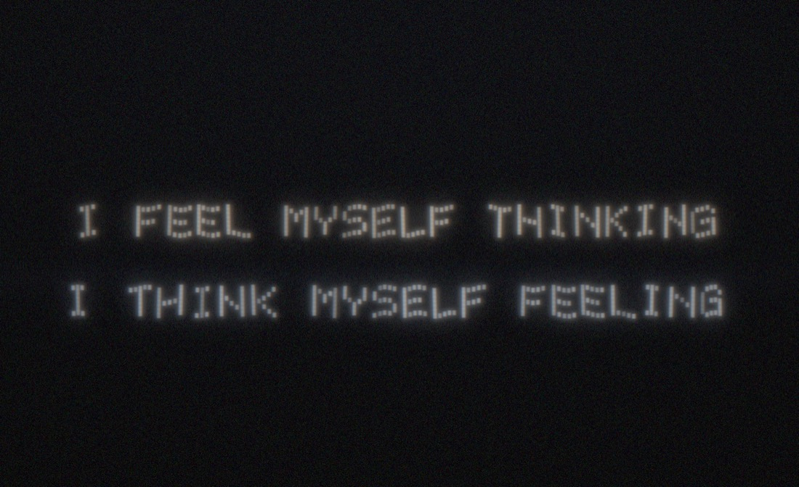

LIGHT TYPE
Walk a sentence into a long-exposure photo. Your phone becomes one moving strip of light; the camera sees the words.

How it works
The phone never shows a whole letter. It shows one thin vertical strip of dots, and the strip changes 60 times a second. You walk sideways at a steady pace with the screen facing the camera. The camera is on a long exposure, so it adds up every strip where you held it, and the strips join into letters in the photo. A scrolling LED shop sign works the same way, except here the sign is your walk.
Letters are dots
Each letter is 5 dots wide and 7 tall, with one blank column after it. This is F:
column: 1 2 3 4 5 6
■ ■ ■ ■ ■ ·
■ · · · · ·
■ · · · · ·
■ ■ ■ ■ · ·
■ · · · · ·
■ · · · · ·
■ · · · · ·
What the screen shows
At any moment the screen is black except for one column of square dots, as tall as the screen:
0.0 s 0.1 s 0.2 s 0.3 s ┌─────┐ ┌─────┐ ┌─────┐ ┌─────┐ │ ■ │ │ ■ │ │ ■ │ │ ■ │ │ ■ │ │ │ │ │ │ │ │ ■ │ │ │ │ │ │ │ │ ■ │ │ ■ │ │ ■ │ │ ■ │ │ ■ │ │ │ │ │ │ │ │ ■ │ │ │ │ │ │ │ │ ■ │ │ │ │ │ │ │ └─────┘ └─────┘ └─────┘ └─────┘ column 1 column 2 column 3 column 4 … of F
Inside each column's slot the squares slide left by one dot as you walk right, so they stay in one place in the photo. After about 60% of the slot the screen goes black until the next column, which keeps a dark gap between dots even if your pace is off. Each screen frame is held for 1/60 s while you move, so the edges carry a little blur.
Walk and the camera adds it up
the photo you walk this way ──▶ ■ ■ ■ ■ ■ ■ ■ ■ ■ ■ ■ ■ ■ ■ ■ ■ ■ ■ ■ ■ ■ ■ ■ ■ ■ ■ ■ ■ ■ ■ ■ ■ ■ ■ ■ ■ ■ ■ ■ ■ ■ ■ ■ ■
Nobody standing in the garden sees the words. Only the photo does.
Speed
The strip moves on a clock (the SPEED setting, in letters per second). Your feet move at your own speed. A soft tick plays as each letter starts so you can feel the pace.
on pace too fast too slow FEEL F E E L FEEL normal stretched wide squashed narrow
Off pace the words stretch or squash, and they stay readable. Wobbles and a line that drifts up or down are fine.
TEST: the checkerboard
Before a real run, press TEST beside START. The phone sweeps a checkerboard instead of words, with the same countdown and ticks.
squares square squares wide squares narrow ██ ██ ██ ████ ████ █ █ █ █ █ ██ ██ ████ █ █ █ █ pace is right walk SLOWER walk FASTER
The same photo checks focus, brightness and framing for the photographer.
Hold to test the light
This prints nothing. It lights the strip at full height while you stand still, so you can check brightness and how the phone looks to the camera. If it shows a whole letter, the phone still has the old app: clear it (see Get the app).
Test photos with an iPhone
Good enough for TEST runs and rehearsals. One iPhone is the light, a second is the camera.
- Hold it dead still. A tripod, or prop it on a wall, chair or bag. Use the 3 s timer so your finger does not shake it.
- Best: Slow Shutter Cam (paid app). Mode Light Trail, shutter Bulb or 15 s. Start on the long low beep, stop on the end tone. You watch the letters appear.
- Free: Camera app, Night mode. It appears only in real darkness (yellow moon icon). On a tripod, tap the moon and drag to the longest time, up to 30 s. It merges frames and may smooth a fast light, so trust it less.
- Not Live Photo › Long Exposure. It covers about 3 s, too short for a line.
- Lock focus first: shine a phone where the walker will be, tap and hold until AE/AF LOCK.
- Use the 1x lens and stand 3 to 5 m back so the whole line fits.
With a proper camera
- Tripod. Manual focus on the line the walker will walk.
- Exposure for the whole walk plus a second each end: about 10 to 15 s for one line.
- Start at ISO 200, f/8. Check the TEST photo, then adjust.
- Open the shutter on the long low beep after the countdown, close it on the two-note end tone.
What it might look like
Simulated photos with the app's own dot font and square dots.

